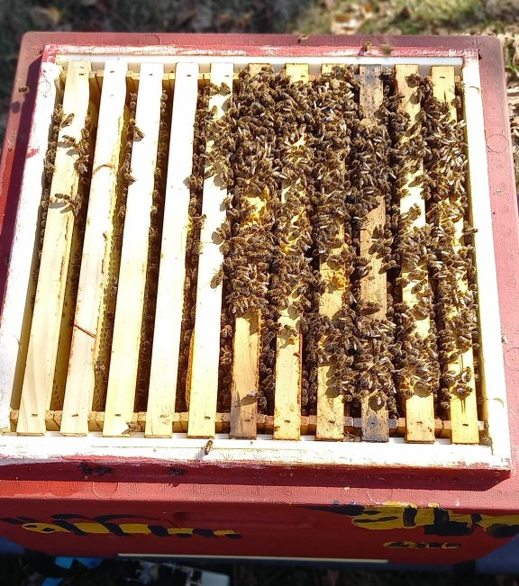

Bei schönstem Wetter und 15 °C (!) wollten wir an diesem schönen Sonntag auch in die Völker in Benfe schauen.

Nach einem sehr durchwachsenen Jahr 2020 mit einigen Schwärmen waren wir heute doch sehr froh, die Völker in bester Stimmung vorzufinden. In die Völkchen wurde noch die eine oder andere Futterwabe eingehängt – in Benfe weiß man ja nie, wie lange die Eiszeit noch dauert …